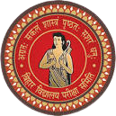
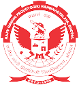
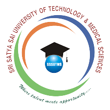

I completed my10th
fgrade education from the Bihar Board and achieved a remarkable result with a first division.
I dedicated myself to my studies, worked hard, and maintained a strong focus on academic excellence.
The Bihar Board's curriculum and examination system provided me with a solid foundation in various
subjects and helped shape my overall educational journey. Achieving a first division demonstrates my
commitment to academic success and reflects my strong work ethic and dedication to learning."

" After completing my 10th grade, I pursued a
Diploma fin Electrical Engineering
from RGPV Bhopal University. The program provided me with a comprehensive understanding of electrical
engineering principles, concepts, and practical applications. I actively participated in various coursework,
laboratory experiments, and projects that allowed me to gain hands-on experience in the field. Through rigorous
studies and consistent effort, I achieved a commendable 7th SGP (Semester Grade Point) result, demonstrating my
dedication to academic excellence. This diploma program equipped me with the necessary skills and knowledge to
excel in the field of electrical engineering and prepared me for future career opportunities in the industry."

"After completing my Diploma in Electrical Engineering, I pursued a Bachelor of Engineering
(BE)
degree in Electrical and Electronics Engineering (EEE) through lateral entry at SSSUTMS Sehore University.
This three-year program provided me with a comprehensive understanding of various subjects, including power systems,
electrical machines, control systems, digital electronics, and microprocessors. I also gained knowledge in electrical circuit analysis,
power distribution, renewable energy systems, and electrical equipment.
Recently, I appeared for the last semester exam of my BE program in May 2023.
I also honed my skills in using software tools relevant to electrical engineering."